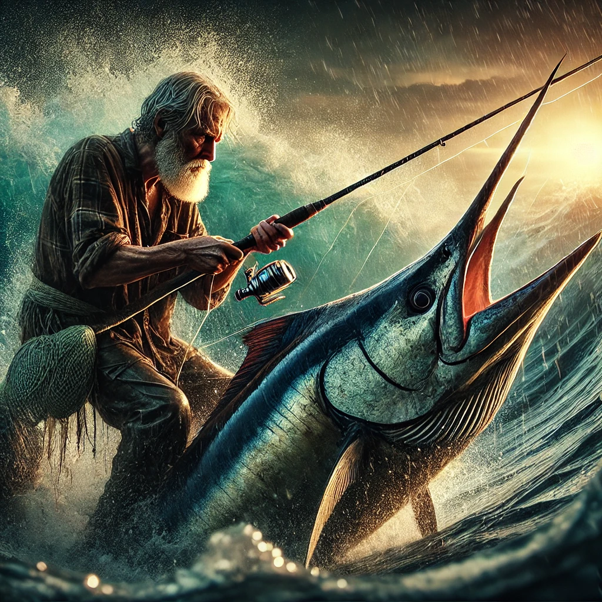

노인과 바다
목차
작가
어니스트 헤밍웨이
출판일
1952년
감상평에 대한 AI그림
고독 속에서도 포기하지 않는 인간의 존엄성과 끈기를 느낄 수 있었다.

감상평에 대한 AI평가
이 감상평은 다음의 감정을 중심으로 구성되어 있습니다.
✨ 경외감 - 산티아고가 극한의 상황에서도 포기하지 않는 모습을 보며 그의 강인한 정신력에 존경심을 느낀 것 같습니다.
✨ 감동 - 신념을 지키며 노력하는 노인의 모습이 감동적으로 다가왔을 것입니다.
✨ 고독 - 노인이 혼자 바다에서 사투를 벌이는 모습이 쓸쓸하고 고독하게 느껴진 것 같습니다.